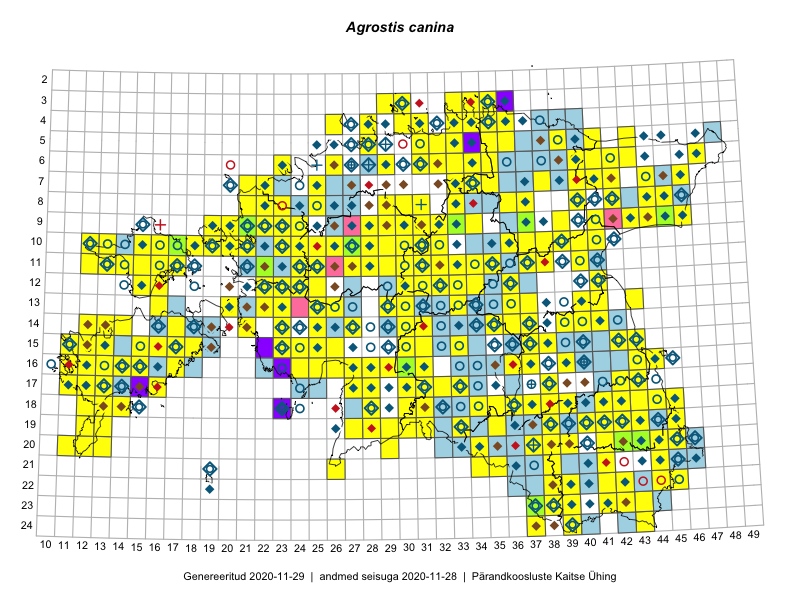

Agrostis canina
Uuendatud: 2016-12-02
Kaardile koondatud taksonid: Agrostis canina L.

Kaart põhineb 232 vaatlusel. Taksonit on leitud 190 ruudust.
Kuvatud viited 20 esimesele andmebaasikirjele, ülejäänud PlutoFis
- Toomas Kukk, Peedu Saar: 2014-09-25: 07-42: ala
- Toomas Kukk, Peedu Saar: 2014-09-24: 06-40: ala
- Toomas Kukk, Peedu Saar: 2014-09-24: 06-41: ala
- Ott Luuk, Peedu Saar: 2015-09-03: 03-30: ala
- Peedu Saar, Ott Luuk: 2015-06-21: 14-41: ala
- Peedu Saar: 2015-07-04: 18-45: ala
- Peedu Saar: 2015-07-04: 18-44: ala
- Toomas Kukk, Peedu Saar: 2014-07-03: 14-21: ala
- Ott Luuk, Peedu Saar: 2015-08-12: 23-43: ala
- Peedu Saar, Sander Laherand: 2015-05-30: 06-42: ala
- Peedu Saar, Liina Oja: 2015-07-20: 08-44: ala
- Ott Luuk, Toivo Sepp: 2015-07-12: 10-31: ala
- Toomas Kukk, Eerik Leibak: 2015-07-29: 16-44: ala
- Peedu Saar, Liina Oja: 2015-07-24: 09-45: ala
- Peedu Saar: 2015-08-10: 13-40: ala
- Peedu Saar, Ott Luuk: 2015-08-12: 23-42: ala
- Toomas Kukk, Mari Reitalu: 2014-06-20: 16-12: ala
- Tiit Hallikma, Toomas Kukk: 2015-07-23: 07-41: ala
- Tiit Hallikma, Toomas Kukk: 2015-07-20: 07-44: ala
- Tiit Hallikma, Toomas Kukk, Meeli Mesipuu: 2015-05-31: 07-46: ala